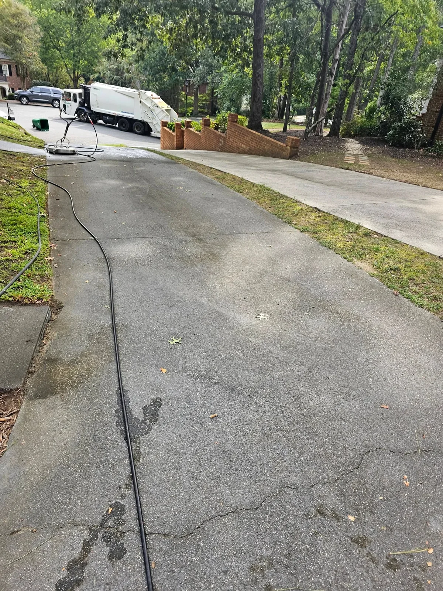

From the call
to the walkaround.
Cleaning is simple. Doing it the same way on every property is the hard part — so we made it a checklist.
- 01
Call or send the address
Tell us what is bothering you — the siding, the roof streaks, the driveway, or all of it. Photos help but are not required. We will ask about the surface and the water source before quoting.
- 02
Walkaround & test patch
On site we check the material, test a small area, and look for anything that needs a gentler method — oxidized paint, loose flashing, a deck that has not been sealed in years. The quote is based on what is actually there.
- 03
Protect, then clean
Plants are covered and wet down, windows closed, electrical fixtures checked. Then the work: soft wash on the house and roof, surface cleaner on concrete, low pressure on wood, and a rinse on everything that should not have soap left on it.
- 04
Walk it with us
Before we pack up, we walk the property with you. Anything you spot gets fixed while we are still there, and you get the before-and-after photos by email or text. No deposit, payment when you are happy.
The house is not
the only thing on site.
Landscaping, pets, outdoor furniture, grills, light fixtures and the neighbour's car — all of it gets considered before water starts moving. Plants are wet down before and rinsed after, and anything delicate gets covered.
If a surface should not be pressure washed, we say so. A soft wash on a roof or a deck is not a shortcut; it is the correct method.

Questions we get
before booking.
Do you need my water?
Yes, a standard outdoor spigot is ideal. If water access is limited, tell us when you call and we will plan around it.
How long does it take?
A house wash is usually two to four hours. A roof treatment is similar. Driveways and decks depend on size and staining.
Will plants be harmed?
They are covered and wet down before we start and rinsed after. The mixes we use are diluted for exterior surfaces, not vegetation.
What about rain?
Light rain does not stop a house wash. If weather would affect the finish or safety, we reschedule at no cost.
Send us the
address.
One walkaround, a written quote, and a date. No deposit and no pressure — if the surface does not need cleaning, we will tell you.